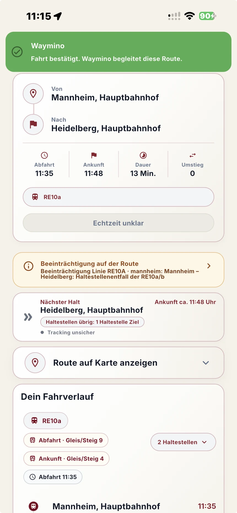

Für die konkrete Fahrt
Von der Erinnerung vor der Abfahrt über Einstieg und Umstieg bis zum Ausstieg bleibt der ausgewählte Reiseverlauf im Mittelpunkt.
Kontrollierter Pilotbetrieb
Waymino begleitet eine ausgewählte Fahrt von der Abfahrt bis zum Ausstieg. Die App ordnet Route, nächste Schritte, verfügbare Echtzeitinformationen und mögliche Abweichungen zu einer verständlichen Fahrtsituation.

Waymino im Überblick
Waymino behandelt die laufende Fahrt als eigenen Zustand. Die App bleibt bei der gewählten Verbindung, macht den nächsten Schritt sichtbar und kennzeichnet Unsicherheit, statt fehlende Daten als Gewissheit auszugeben.
Von der Erinnerung vor der Abfahrt über Einstieg und Umstieg bis zum Ausstieg bleibt der ausgewählte Reiseverlauf im Mittelpunkt.
Verfügbare Live-Daten, planmäßige Zeiten und unklare Zustände werden unterschieden. Offizielle Fahrgastinformationen bleiben maßgeblich.
Zentrale Funktionen
Die Funktionen sind auf die aktive Reise ausgerichtet und werden nur so weit beschrieben, wie sie im aktuellen Projektstand belegt sind.
Waymino erinnert vor der Abfahrt und kann darauf hinweisen, wenn der Einstieg anschließend nicht erkannt wurde.
Mehrstufige Hinweise bereiten auf den nächsten Umstieg oder den Ausstieg an der gewählten Zielhaltestelle vor.
Verfügbare Standort- und Routensignale werden genutzt, um eine mögliche falsche Richtung, einen frühen Ausstieg oder eine Fahrt über das Ziel hinaus sichtbar zu machen.
Soweit Daten vorliegen, erscheinen Verspätungen, Ausfälle, Ersatzverkehr, Baustellen sowie Gleis- und Steiginformationen im Zusammenhang der Verbindung.
Route, Linie, Halte und der nächste relevante Schritt werden zusammengeführt, damit die laufende Fahrt nachvollziehbar bleibt.
Nur bestätigte Echtzeitdaten werden als solche bezeichnet. Andernfalls zeigt Waymino den unklaren Status und die planmäßigen Zeiten.
Navigation und Routenführung
Waymino strukturiert die Fahrt so, dass nicht alle Informationen gleichzeitig um Aufmerksamkeit konkurrieren.
Gewählte Verbindung, Abfahrtszeit, Linie und mögliche Beeinträchtigungen prüfen.
Rechtzeitig zur Abfahrt bereit sein und den erkannten oder unklaren Einstieg nachvollziehen.
Nächsten Halt, verbleibende Haltestellen, Umstieg und Fahrverlauf im Blick behalten.
Mehrstufig auf den Ausstieg vorbereitet werden und die Fahrt bewusst abschließen.
Die aktive Fahrt
Der vorhandene Waymino-Screenshot zeigt die zentrale Produktidee: Route, Fahrtdaten, nächster Halt, Beeinträchtigung und Echtzeitstatus werden nicht getrennt versteckt, sondern in einer verständlichen Fahrtsicht verbunden.
Technische Produktprinzipien
Technische Details werden nur dort sichtbar, wo sie Nutzern helfen, Angaben und Grenzen richtig einzuordnen.
Waymino führt verfügbare ÖPNV-Informationen in einer gemeinsamen Fahrtsicht zusammen. Abdeckung und Datenqualität können je nach Verbindung variieren.
Fehlt eine verlässliche Live-Bestätigung, bleibt die planmäßige Information sichtbar und der Status wird als unklar gekennzeichnet.
Die gewählte Route wird während der Reise fortlaufend eingeordnet, statt nach der Verbindungssuche in einer statischen Ergebnisliste zu enden.
Plattformen
Waymino ist noch keine allgemein veröffentlichte App. Die Website trennt deshalb verfügbare Pilotzugänge klar von einer öffentlichen Store-Verfügbarkeit.
Der iOS-Pilot wird kontrolliert über TestFlight und auf Einladung durchgeführt.
Für den kontrollierten Android-Pilot können Interessierte einen Zugang anfragen. Eine öffentliche Verfügbarkeit bei Google Play besteht derzeit noch nicht.
Android-Pilotzugang anfragenDer derzeit belegte Betrieb konzentriert sich auf kontrollierte Tests in Hessen und Baden-Württemberg. Rückmeldungen aus Feldtests dienen der Prüfung von Tracking, Warnlogik, Echtzeitdarstellung und Routenplausibilität. Android-Pilot · Zugang auf Anfrage: Für den kontrollierten Android-Pilot können Interessierte einen Zugang anfragen. Eine öffentliche Verfügbarkeit bei Google Play besteht derzeit noch nicht.
Support und Verantwortung
Waymino wird von RideRight entwickelt und verantwortet. Für Support, Datenschutz und rechtliche Angaben bleiben die bestehenden Wege erhalten.
Für nachvollziehbare Rückmeldungen helfen Route, Datum, Uhrzeit, Plattform, App-Version und eine kurze Beschreibung von Erwartung und tatsächlichem Verhalten.
Die vorhandenen Angaben zur Datenverarbeitung, zum Verantwortlichen und zum Anbieter bleiben eigenständig erreichbar.